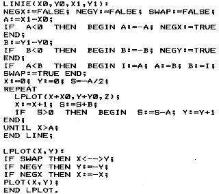

80-Bus Journal |
März 1983 · Ausgabe 3 |
Also: Beiliegendes Programm enthält nach einem kurzen (aber eindrucksvollen) Demo vorne dran 3 wesentliche Unterprogramme: PLOT(X,Y,Z), LINIE(X1,Y1,Z) und KREIS (R). Bei PLOT werden also 3 Parameter übergeben: X-Wert in DE, Y-Wert in HL, und Z in A. Z wählt zwischen Punkt löschen, setzen und invertieren aus. Die Koordinaten brauchten eigentlich nicht in 16-Bit-Registem übergeben zu werden, aber so wird das Programm unniverseller und Plotten außerhalb des Bildschirmbereiches kann in einfacher Weise unterdrückt werden. Zunächst werden alle Register mit PUSH auf dem Stack aufgehoben. AF noch einmal mehr, da A noch gebraucht und in DISCOR verändert wird. DISCOR überprüft die Koordinaten und kehrt bei Bereichsüberschreitung mit gelöschtem setzten Carry sofort zurück, andernfalls errechnet es aus den Koordinaten die Bildschirmadresse (in HL) und das innerhalb einer Zeichenposition zu setzende Klötzchen als Bitmuster in B, in A wird C0H geladen well von C0H-FFH der Zeichengenerator auf Grafik steht. In PLOT wird dann das alte AF in DE „gepoppt“ (in AF ginge nicht da dann das Carry verlorenginge). Bei gelöschtem Carry wird PLOT sofort verlassen (JR PLTRET). CP (HL) guckt nach, ob an dieser Adresse schon Grafik ist. Wenn nicht, wird auf Grafik umgeschaltet und vorhandenes Zeichen gelöscht. Dann gibt es 3 Möglichkeiten: Punkt löschen (dann kann D bzw. A nicht 0 sein), Punkt setzen (A-1=0) oder invertieren. Bei Löschen wird das Bitmuster in B bzw. A invertiert (CPL) und eine AND-Verknüpfung mit dem Bildschirminhalt vorgenommen. Das löscht das entsprechende Klötzchen. Bei Punkt setzen wird mit einer ODER-Verknüpfung das Klötzchen hell und evtl. schon vorhandene Nachbarklötzchen bleiben erhalten. Invertieren sollte damit eigentlich auch klar sein. Zum Abschluß von PLOT werden alle beteiligten Register wieder auf ihren Anfangszustand gebracht (in POARET).
In DISCOR werden als Test auf Bereichsüberschreitung zunächst die höherwertigen Register von DE und HL auf 0 überprüft. Dies geschieht nicht etwa mit LD A,H CP 0 .. LD A,D CP 0 sondern mit LD A,H OR D. Wenn in H oder D irgendein Bit gesetzt ist, ist nach OR D die Z-Flagge zurückgesetzt. Danach muß man halt die Register E und L noch überprüfen. Die Y-Achse wird invertiert damit der 0-Punkt unten links ist. Den folgenden Algorithmus zum Berechnen der Bildschirmadresse und des Bitmuster erkläre ich nicht, ich habe ihn auch selber nicht ganz verstanden sondern aus dem Pascal übernommen. Auf jeden Fall ist er schneller & einfacher als mein alter Algorithmus.
Jetzt zu LINIE: Eigentlich braucht man zum Zeichnen einer Linie 5 Parameter: X0,Y0,X1,Y1,Z. Das ist aber unpraktisch, außerdem ist es oft so, daß man als Anfangspunkt einer Linie den Endpunkt der vorhergehenden Linie benutzt. Deshalb gibt es SETZXY, das den Anfangspunkt der Linie in den RAM-Variablen X0,Y0 ablegt. LINIE kriegt nur X1,Y1 und sorgt dafür, daß hinterher X1–)X0 und Y1–)Y0. Etwas Kopfzerbrechen bereitete mir die Frage wo die Variablen im RAM unterzubringen seien, da das Program auch im Eprom laufen soll. Ich schlage dafür die Speicherstellen 0C1CH-0C1FH vor, die als 9. und 10. Argument bei Nassys reserviert und bestimmt nie gebraucht werden. Es ist garnicht so simpel, zwischen 2 Punkten auf dem Bildschirm eine Linie zu zeichnen, die die beste Anpassung in der Grafikauflösung darstellt. Ich habe eine Veröffentlichung von B. K. Horn, „Circle Generators for Display Devices“ Comp. Graphics & Image Proc. 5,280-288 (1976) zugrunde gelegt, die ohne Multiplikation auskommt (aber anders ist das was ich schon ’mal in Pascal beschrieben hab) der Algorithmus ist Pascal-ähnlich sehr einfach zu formulieren:
Das habe ich ziemlich „wörtlich“ in Assembler übersetzt, lästig ist natürlich die 16-Bit-Arithmetik (mit dem 6809 z.B. geht das viel einfacher, mit dem 9900 auch aber das ist ’eh eine 16-Bit-CPU und sonst recht unschön). Ein Programmiertrick, den ich noch nie irgendwo anders gesehenhabe, spart RAM-Platz (Eprom-Version!), den man eigentlich für die Variablen NEGX,A,B,X,Y &sw. benötigte: Bei LIO wird der Stackpointer um 6 dekrementiert und IX erhält den Wert von SP. Dann kann man relativ zu IX (ins Positive) innerhalb dieses
| Seite 18 von 32 |
|---|